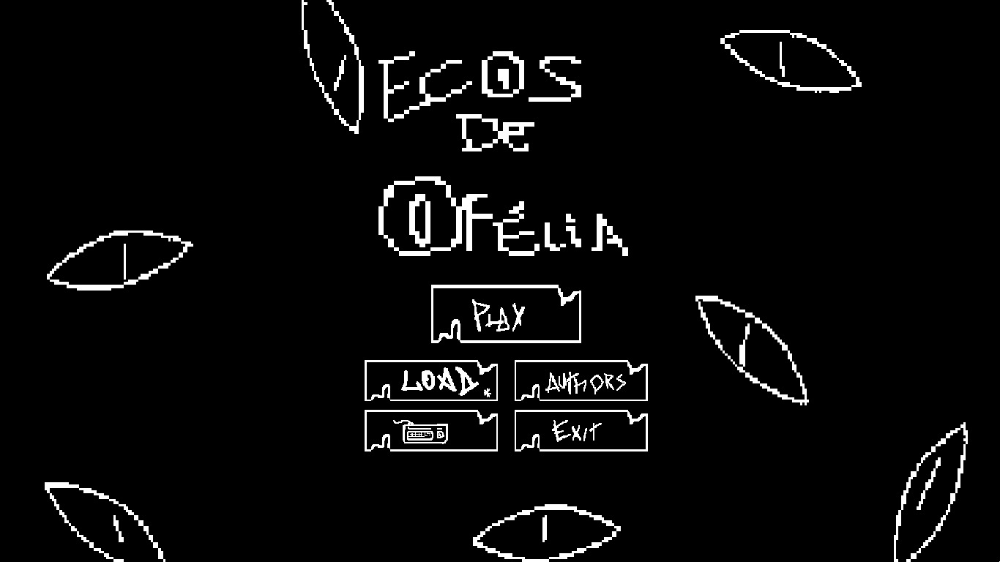

Projeto Digital · Terror 2D
Ecos de Ofélia

Ecos de Ofélia é um jogo de terror e sobrevivência 2D com pixel art e ambientação claustrofóbica. A mecânica central envolve a luz, que é o guia e o fator essencial de sobrevivência. Atuei como programador e game designer neste protótipo universitário.
Sobre o projeto
Ecos de Ofélia combina gráficos em pixel art com uma ambientação claustrofóbica. O protótipo foi desenvolvido como projeto universitário de Design de Games para apresentar a essência da proposta: mecânicas principais, atmosfera e conceito visual, buscando testes e validação de ideias.
Destaques
- Mecânica central de luz como guia e fator de sobrevivência
- Ambientação claustrofóbica com pixel art
- Foco em atmosfera de terror e sobrevivência
Galeria